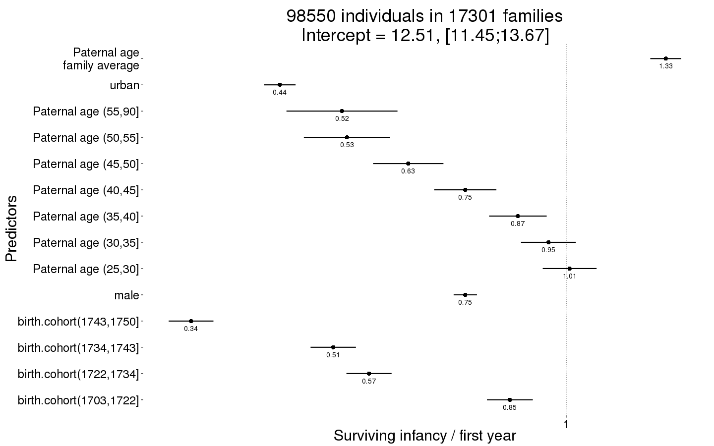
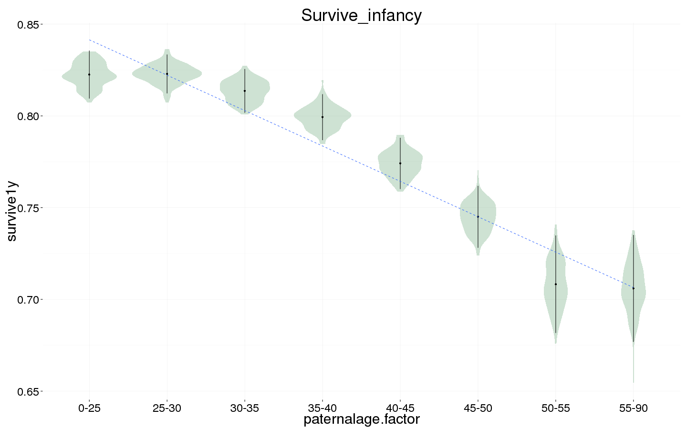
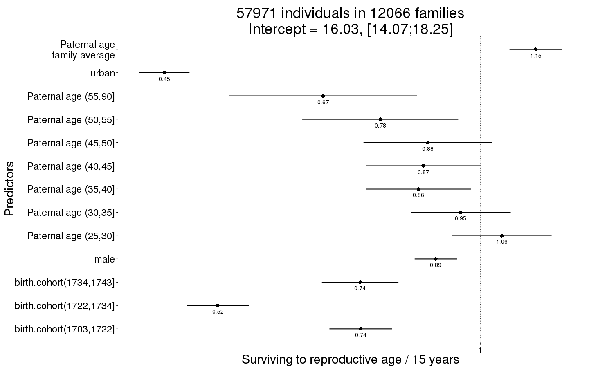
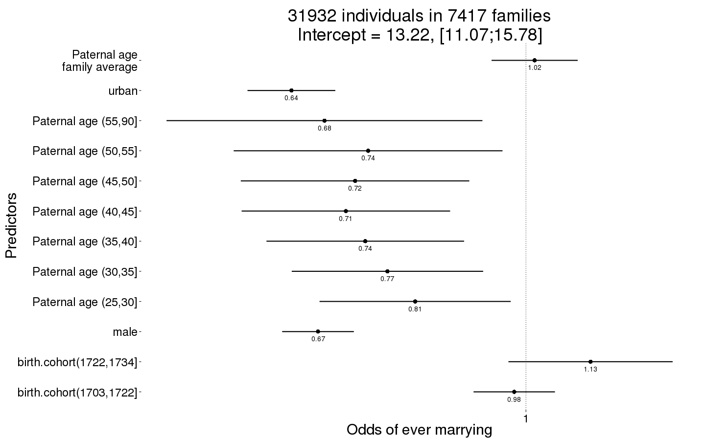
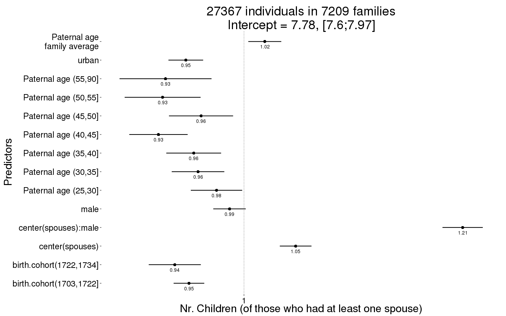
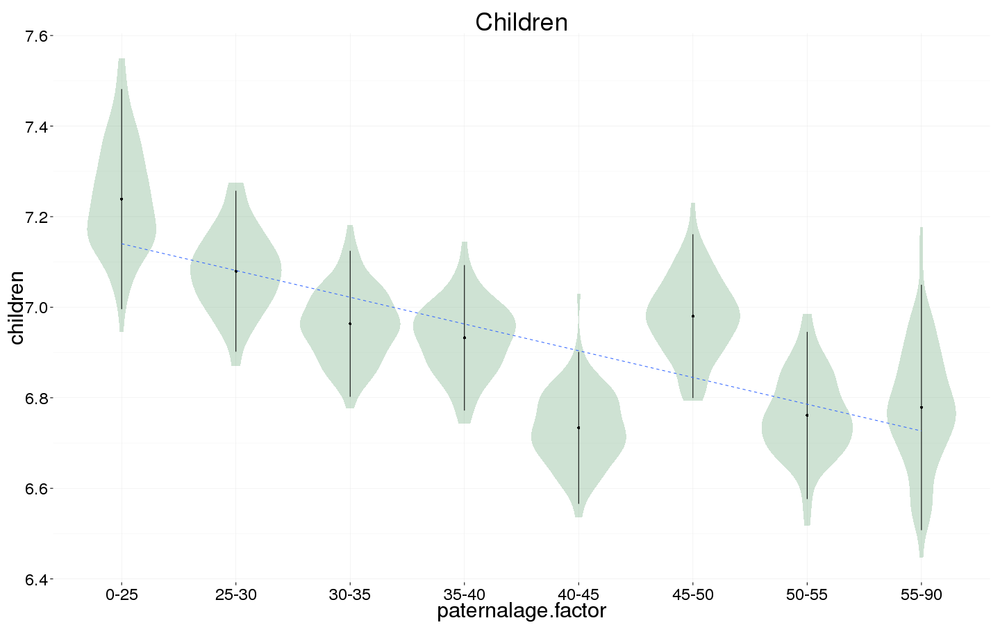
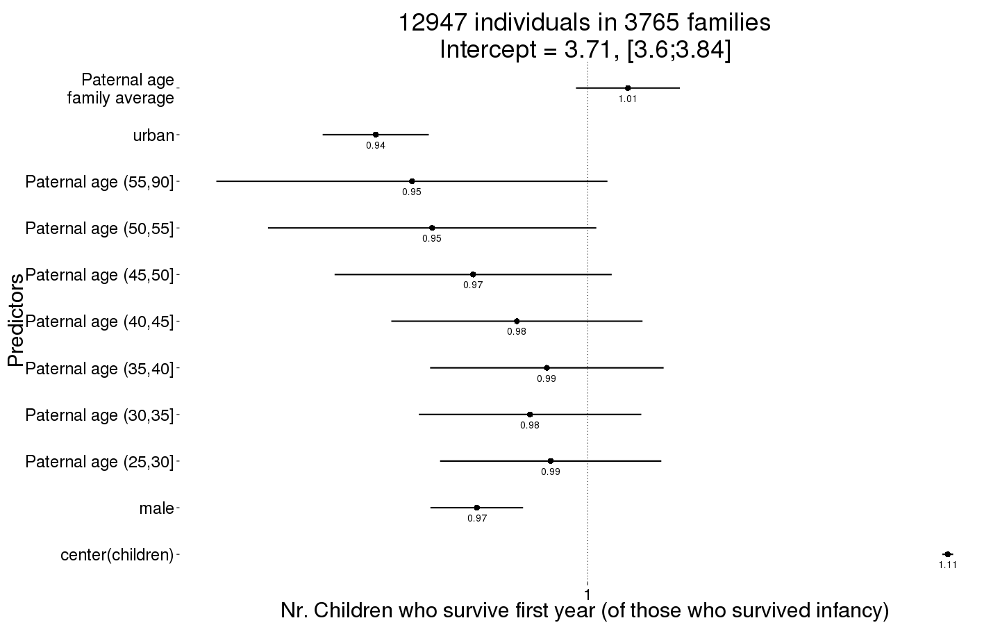
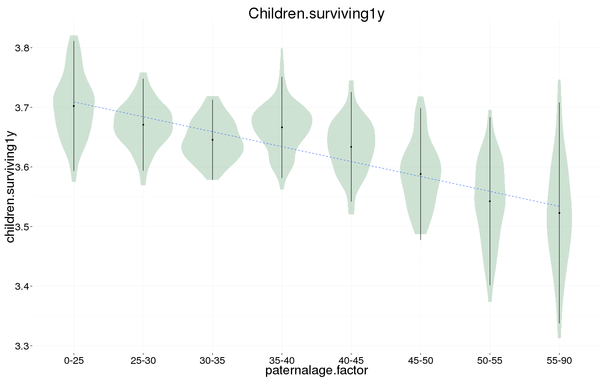
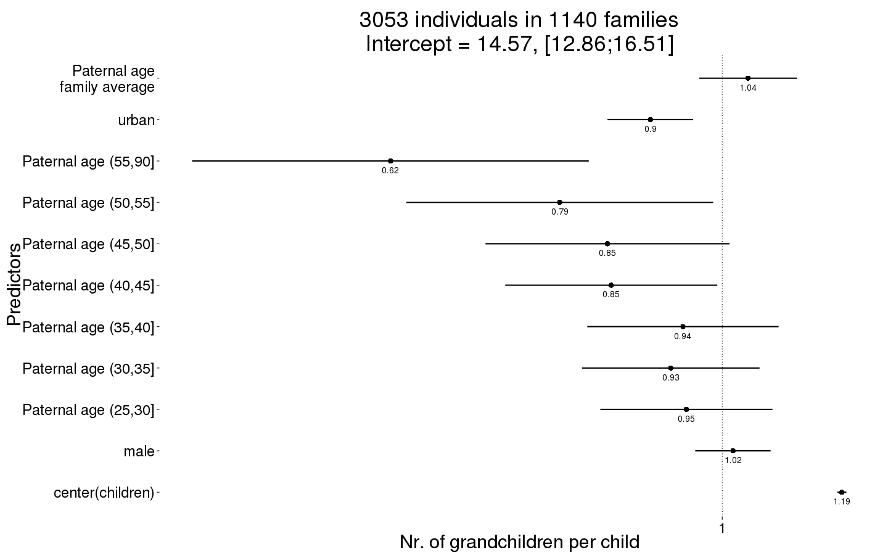
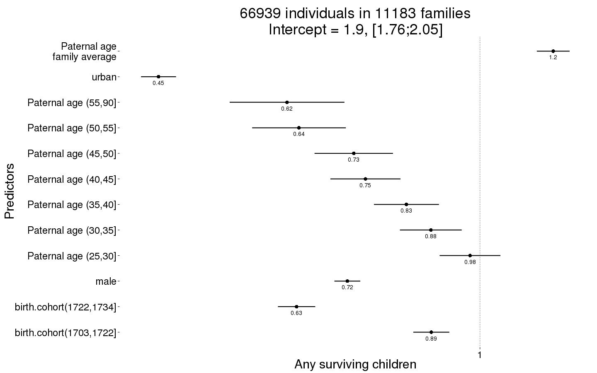

Québec main effects, nonlinear
Loading details
library(data.table); library(ggplot2); library(knitr); library(lme4); library(QuantPsyc); library(blme)
opts_chunk$set(warning=TRUE, cache=TRUE,tidy=FALSE,autodep=TRUE,dev=c('png','pdf'),fig.width=20,fig.height=12.5,out.width='1440px',out.height='900px',cache.extra=file.info('rpqa.rdata')[, 'mtime'])
source("0__helpers.R")
load("rpqa.rdata")
Analysis description
Data subset
The rpqa.1 dataset contains only those participants where paternal age is known and the birthdate is between 1630 and 1750.
Model description
All of the following models have the following in common:
Multivariate normal prior
Using the R package blme which provides a thin Bayesian wrapper around lme4, we define a weak multivariate normal prior on the fixed effects. Especially in models where we have many covariates and the outcome has little variability (e.g. child mortality in modern Sweden), this helps us to combat complete separation and the Hauck-Donner effect. In the absence of these conditions, the extremely weak prior (SD = 9) leads to results that are identical or very similar to the standard lme4 models.
Optimizer settings
Bobyqa is fairly robust to convergence failures. In addition to using Bobyqa, we center some variables that otherwise lead to large eigenvalues.
control_defaults = glmerControl(optimizer = "bobyqa")
Main predictor
The main predictor, paternal age, has been binned into meaningful bins. This way, we let the data speak and can see whether the shape of the relationship is consistent with a linear effect. To this end we plot a linear regression through the best estimates for each factor (inversely weighted by confidence interval width, i.e. certainty). Even if a nonlinear fit might be slightly better, our theory clearly predicts a linear fit, so we are satisfied it the data is consistent with a linear effect.
formr::crosstabs(rpqa.1$paternalage.factor)
## rpqa.1$paternalage.factor
## [0,25] (25,30] (30,35] (35,40] (40,45] (45,50] (50,55] (55,90]
## 6748 20914 24900 21798 15871 9504 4529 2835
Model description
All of the following models have the following in common:
Covariates
As in our main models, we control for birth.cohort (birth years in five equally large bins), male sex. Additionally, we control for paternal and maternal loss (whether either parent died within 5 years of the birth), for maternal age (bins of 14-20, 20-35 and 35-50), the number of siblings.
Model stratification
We added random intercepts for each family (father-mother dyad). We then controlled for the average paternal age in the family. Hence, the paternal age effects in the plot are split into those between families and those within families or between siblings. The relevant effect for our hypothesized mechanism, de novo mutations, is paternal age between siblings.
Episodes of selection
Here, episodes of selection refers to survival, mating success, reproductive success. To steer clear of sacrificial pseudo-replication, we make sure that each effect cannot be explained by the episode of selection preceding it. At its simplest, we check for effect on survival to reproduction only among those who lived to their first birthday. In later models, we look for an effect on number of children only among those who married and control their number of spouses.
Survival to first year
Survive_infancy <- bglmer(
survive1y ~ birth.cohort + male + urban + paternalage.mean + paternalage.factor + (1|idParents),
data= rpqa.1,
family = 'binomial', control = control_defaults,
fixef.prior = normal() )
summary(Survive_infancy)
## Cov prior : idParents ~ wishart(df = 3.5, scale = Inf, posterior.scale = cov, common.scale = TRUE)
## Fixef prior: normal(sd = c(10, 2.5, ...), corr = c(0 ...), common.scale = FALSE)
## Prior dev : 59.37
##
## Generalized linear mixed model fit by maximum likelihood (Laplace
## Approximation) [bglmerMod]
## Family: binomial ( logit )
## Formula: survive1y ~ birth.cohort + male + urban + paternalage.mean +
## paternalage.factor + (1 | idParents)
## Data: rpqa.1
## Control: control_defaults
##
## AIC BIC logLik deviance df.resid
## 93561 93713 -46765 93529 96026
##
## Scaled residuals:
## Min 1Q Median 3Q Max
## -4.316 0.270 0.384 0.497 1.771
##
## Random effects:
## Groups Name Variance Std.Dev.
## idParents (Intercept) 0.559 0.748
## Number of obs: 96042, groups: idParents, 17030
##
## Fixed effects:
## Estimate Std. Error z value Pr(>|z|)
## (Intercept) 2.4853 0.0451 55.1 < 2e-16 ***
## birth.cohort(1706,1723] -0.1970 0.0333 -5.9 3.3e-09 ***
## birth.cohort(1723,1734] -0.5506 0.0331 -16.6 < 2e-16 ***
## birth.cohort(1734,1743] -0.6400 0.0329 -19.5 < 2e-16 ***
## birth.cohort(1743,1750] -1.0500 0.0324 -32.4 < 2e-16 ***
## male -0.2917 0.0173 -16.9 < 2e-16 ***
## urban -0.8387 0.0235 -35.7 < 2e-16 ***
## paternalage.mean 0.2762 0.0230 12.0 < 2e-16 ***
## paternalage.factor(25,30] 0.0141 0.0400 0.4 0.7249
## paternalage.factor(30,35] -0.0457 0.0407 -1.1 0.2617
## paternalage.factor(35,40] -0.1334 0.0427 -3.1 0.0018 **
## paternalage.factor(40,45] -0.2872 0.0461 -6.2 4.6e-10 ***
## paternalage.factor(45,50] -0.4393 0.0522 -8.4 < 2e-16 ***
## paternalage.factor(50,55] -0.6184 0.0641 -9.7 < 2e-16 ***
## paternalage.factor(55,90] -0.6232 0.0823 -7.6 3.8e-14 ***
## ---
## Signif. codes: 0 '***' 0.001 '**' 0.01 '*' 0.05 '.' 0.1 ' ' 1
##
## Correlation of Fixed Effects:
## (Intr) b.(170 b.(172 b.(173 b.(174 male urban ptrnl. p.(25,
## b.(1706,172 -0.405
## b.(1723,173 -0.444 0.591
## b.(1734,174 -0.434 0.566 0.656
## b.(1743,175 -0.433 0.566 0.634 0.684
## male -0.213 -0.002 0.003 0.005 0.007
## urban -0.198 0.053 0.084 0.113 0.133 0.025
## paternlg.mn 0.210 0.037 0.077 0.115 0.143 -0.005 0.004
## ptr.(25,30] -0.689 0.001 -0.005 -0.016 -0.022 0.003 -0.001 -0.149
## ptr.(30,35] -0.714 0.003 -0.007 -0.030 -0.038 0.004 -0.009 -0.267 0.772
## ptr.(35,40] -0.703 -0.005 -0.004 -0.040 -0.061 0.003 -0.012 -0.354 0.749
## ptr.(40,45] -0.676 -0.012 -0.005 -0.050 -0.075 0.005 -0.007 -0.422 0.709
## ptr.(45,50] -0.625 -0.016 -0.014 -0.053 -0.078 0.009 -0.006 -0.482 0.642
## ptr.(50,55] -0.539 -0.011 -0.019 -0.046 -0.069 0.008 -0.008 -0.509 0.539
## ptr.(55,90] -0.454 -0.016 -0.030 -0.054 -0.066 0.004 -0.011 -0.557 0.442
## p.(30, p.(35, p.(40, p.(45, p.(50,
## b.(1706,172
## b.(1723,173
## b.(1734,174
## b.(1743,175
## male
## urban
## paternlg.mn
## ptr.(25,30]
## ptr.(30,35]
## ptr.(35,40] 0.798
## ptr.(40,45] 0.765 0.782
## ptr.(45,50] 0.703 0.728 0.734
## ptr.(50,55] 0.602 0.633 0.645 0.641
## ptr.(55,90] 0.509 0.545 0.565 0.571 0.553
Survive_infancy_coefs = fortify_mine(Survive_infancy)
plot_fortified_mer(Survive_infancy_coefs, "Surviving infancy / first year")

Survive_infancy_boot = plot_factor_response(Survive_infancy)

Survival to reproductive age
Survive_reproductive <- bglmer(
surviveR ~ birth.cohort + male + urban + paternalage.mean + paternalage.factor + (1|idParents),
data= rpqa.1, subset = survive1y == TRUE,
family = 'binomial', control = control_defaults,
fixef.prior = normal() )
summary(Survive_reproductive)
## Cov prior : idParents ~ wishart(df = 3.5, scale = Inf, posterior.scale = cov, common.scale = TRUE)
## Fixef prior: normal(sd = c(10, 2.5, ...), corr = c(0 ...), common.scale = FALSE)
## Prior dev : 59.58
##
## Generalized linear mixed model fit by maximum likelihood (Laplace
## Approximation) [bglmerMod]
## Family: binomial ( logit )
## Formula:
## surviveR ~ birth.cohort + male + urban + paternalage.mean + paternalage.factor +
## (1 | idParents)
## Data: rpqa.1
## Control: control_defaults
## Subset: survive1y == TRUE
##
## AIC BIC logLik deviance df.resid
## 59364 59512 -29666 59332 75767
##
## Scaled residuals:
## Min 1Q Median 3Q Max
## -4.013 0.272 0.329 0.396 1.054
##
## Random effects:
## Groups Name Variance Std.Dev.
## idParents (Intercept) 0.419 0.647
## Number of obs: 75783, groups: idParents, 16062
##
## Fixed effects:
## Estimate Std. Error z value Pr(>|z|)
## (Intercept) 2.7002 0.0567 47.6 < 2e-16 ***
## birth.cohort(1706,1723] -0.2436 0.0394 -6.2 6.6e-10 ***
## birth.cohort(1723,1734] -0.5877 0.0388 -15.1 < 2e-16 ***
## birth.cohort(1734,1743] -0.3686 0.0401 -9.2 < 2e-16 ***
## birth.cohort(1743,1750] -0.8433 0.0391 -21.6 < 2e-16 ***
## male -0.0966 0.0225 -4.3 1.7e-05 ***
## urban -0.8348 0.0282 -29.6 < 2e-16 ***
## paternalage.mean 0.1258 0.0284 4.4 9.2e-06 ***
## paternalage.factor(25,30] 0.0085 0.0523 0.2 0.87100
## paternalage.factor(30,35] -0.0692 0.0529 -1.3 0.19069
## paternalage.factor(35,40] -0.1792 0.0553 -3.2 0.00119 **
## paternalage.factor(40,45] -0.1563 0.0602 -2.6 0.00949 **
## paternalage.factor(45,50] -0.2044 0.0685 -3.0 0.00284 **
## paternalage.factor(50,55] -0.2899 0.0848 -3.4 0.00062 ***
## paternalage.factor(55,90] -0.3613 0.1051 -3.4 0.00058 ***
## ---
## Signif. codes: 0 '***' 0.001 '**' 0.01 '*' 0.05 '.' 0.1 ' ' 1
##
## Correlation of Fixed Effects:
## (Intr) b.(170 b.(172 b.(173 b.(174 male urban ptrnl. p.(25,
## b.(1706,172 -0.371
## b.(1723,173 -0.408 0.567
## b.(1734,174 -0.382 0.533 0.595
## b.(1743,175 -0.393 0.544 0.592 0.603
## male -0.207 -0.001 0.003 0.006 0.003
## urban -0.198 0.062 0.097 0.120 0.149 0.036
## paternlg.mn 0.228 0.038 0.077 0.107 0.127 0.001 0.002
## ptr.(25,30] -0.719 -0.003 -0.005 -0.014 -0.016 0.005 0.003 -0.153
## ptr.(30,35] -0.749 -0.001 -0.003 -0.024 -0.024 0.007 -0.002 -0.274 0.776
## ptr.(35,40] -0.742 -0.010 -0.001 -0.032 -0.041 0.004 -0.005 -0.365 0.757
## ptr.(40,45] -0.706 -0.017 -0.002 -0.038 -0.049 0.003 -0.003 -0.434 0.710
## ptr.(45,50] -0.651 -0.018 -0.010 -0.039 -0.050 0.008 -0.006 -0.494 0.641
## ptr.(50,55] -0.560 -0.012 -0.014 -0.031 -0.041 0.010 -0.008 -0.518 0.536
## ptr.(55,90] -0.489 -0.020 -0.026 -0.042 -0.047 0.001 -0.009 -0.586 0.457
## p.(30, p.(35, p.(40, p.(45, p.(50,
## b.(1706,172
## b.(1723,173
## b.(1734,174
## b.(1743,175
## male
## urban
## paternlg.mn
## ptr.(25,30]
## ptr.(30,35]
## ptr.(35,40] 0.804
## ptr.(40,45] 0.765 0.782
## ptr.(45,50] 0.703 0.729 0.724
## ptr.(50,55] 0.600 0.631 0.636 0.626
## ptr.(55,90] 0.528 0.568 0.583 0.586 0.555
Survive_reproductive_coefs = fortify_mine(Survive_reproductive)
plot_fortified_mer(Survive_reproductive_coefs, "Surviving to reproductive age / 15 years")

Survive_reproductive_boot = plot_factor_response(Survive_reproductive)

Ever married
Ever_married <- bglmer(
ever_married ~ birth.cohort + male + urban + paternalage.mean + paternalage.factor + (1|idParents),
data= rpqa.1, subset = surviveR == T,
family = 'binomial', control = control_defaults,
fixef.prior = normal() )
summary(Ever_married)
## Cov prior : idParents ~ wishart(df = 3.5, scale = Inf, posterior.scale = cov, common.scale = TRUE)
## Fixef prior: normal(sd = c(10, 2.5, ...), corr = c(0 ...), common.scale = FALSE)
## Prior dev : 58.97
##
## Generalized linear mixed model fit by maximum likelihood (Laplace
## Approximation) [bglmerMod]
## Family: binomial ( logit )
## Formula: ever_married ~ birth.cohort + male + urban + paternalage.mean +
## paternalage.factor + (1 | idParents)
## Data: rpqa.1
## Control: control_defaults
## Subset: surviveR == T
##
## AIC BIC logLik deviance df.resid
## 50649 50795 -25309 50617 65175
##
## Scaled residuals:
## Min 1Q Median 3Q Max
## -3.887 0.277 0.328 0.385 1.001
##
## Random effects:
## Groups Name Variance Std.Dev.
## idParents (Intercept) 0.524 0.724
## Number of obs: 65191, groups: idParents, 15422
##
## Fixed effects:
## Estimate Std. Error z value Pr(>|z|)
## (Intercept) 2.4170 0.0631 38.3 < 2e-16 ***
## birth.cohort(1706,1723] -0.0105 0.0387 -0.3 0.78627
## birth.cohort(1723,1734] -0.0474 0.0404 -1.2 0.23994
## birth.cohort(1734,1743] 0.0516 0.0407 1.3 0.20459
## birth.cohort(1743,1750] 0.3864 0.0463 8.4 < 2e-16 ***
## male -0.3631 0.0248 -14.6 < 2e-16 ***
## urban -0.4592 0.0332 -13.8 < 2e-16 ***
## paternalage.mean -0.0264 0.0310 -0.9 0.39386
## paternalage.factor(25,30] -0.0747 0.0611 -1.2 0.22138
## paternalage.factor(30,35] -0.1921 0.0612 -3.1 0.00169 **
## paternalage.factor(35,40] -0.2286 0.0637 -3.6 0.00033 ***
## paternalage.factor(40,45] -0.1905 0.0685 -2.8 0.00543 **
## paternalage.factor(45,50] -0.2124 0.0767 -2.8 0.00563 **
## paternalage.factor(50,55] -0.1288 0.0946 -1.4 0.17371
## paternalage.factor(55,90] -0.0511 0.1165 -0.4 0.66127
## ---
## Signif. codes: 0 '***' 0.001 '**' 0.01 '*' 0.05 '.' 0.1 ' ' 1
##
## Correlation of Fixed Effects:
## (Intr) b.(170 b.(172 b.(173 b.(174 male urban ptrnl. p.(25,
## b.(1706,172 -0.304
## b.(1723,173 -0.323 0.509
## b.(1734,174 -0.305 0.485 0.529
## b.(1743,175 -0.265 0.423 0.445 0.472
## male -0.219 -0.003 0.001 0.003 -0.006
## urban -0.177 0.077 0.102 0.124 0.122 0.045
## paternlg.mn 0.201 0.057 0.092 0.127 0.126 0.002 0.005
## ptr.(25,30] -0.770 -0.003 -0.004 -0.011 -0.012 0.001 0.005 -0.142
## ptr.(30,35] -0.799 -0.004 -0.002 -0.026 -0.024 0.004 0.000 -0.254 0.799
## ptr.(35,40] -0.788 -0.014 -0.003 -0.035 -0.041 0.005 0.000 -0.336 0.780
## ptr.(40,45] -0.753 -0.023 -0.006 -0.043 -0.049 -0.001 -0.003 -0.406 0.739
## ptr.(45,50] -0.698 -0.026 -0.017 -0.046 -0.050 0.005 -0.006 -0.469 0.675
## ptr.(50,55] -0.594 -0.023 -0.024 -0.039 -0.044 0.008 -0.005 -0.494 0.563
## ptr.(55,90] -0.513 -0.030 -0.032 -0.054 -0.050 0.001 -0.009 -0.559 0.479
## p.(30, p.(35, p.(40, p.(45, p.(50,
## b.(1706,172
## b.(1723,173
## b.(1734,174
## b.(1743,175
## male
## urban
## paternlg.mn
## ptr.(25,30]
## ptr.(30,35]
## ptr.(35,40] 0.825
## ptr.(40,45] 0.792 0.803
## ptr.(45,50] 0.734 0.753 0.751
## ptr.(50,55] 0.623 0.648 0.655 0.646
## ptr.(55,90] 0.544 0.577 0.593 0.598 0.562
Ever_married_coefs = fortify_mine(Ever_married)
plot_fortified_mer(Ever_married_coefs, "Odds of ever marrying")

Ever_married_boot = plot_factor_response(Ever_married)

Number of children
Children <- bglmer(
children ~ center(spouses)*male + urban + birth.cohort + paternalage.mean + paternalage.factor + (1|idParents),
data= rpqa.1, subset = spouses > 0,
family = 'poisson', control = control_defaults,
fixef.prior = normal() )
summary(Children)
## Cov prior : idParents ~ wishart(df = 3.5, scale = Inf, posterior.scale = cov, common.scale = TRUE)
## Fixef prior: normal(sd = c(10, 2.5, ...), corr = c(0 ...), common.scale = FALSE)
## Prior dev : 68.69
##
## Generalized linear mixed model fit by maximum likelihood (Laplace
## Approximation) [bglmerMod]
## Family: poisson ( log )
## Formula:
## children ~ center(spouses) * male + urban + birth.cohort + paternalage.mean +
## paternalage.factor + (1 | idParents)
## Data: rpqa.1
## Control: control_defaults
## Subset: spouses > 0
##
## AIC BIC logLik deviance df.resid
## 371478 371639 -185721 371442 56344
##
## Scaled residuals:
## Min 1Q Median 3Q Max
## -3.753 -1.062 0.082 0.963 6.572
##
## Random effects:
## Groups Name Variance Std.Dev.
## idParents (Intercept) 0.0993 0.315
## Number of obs: 56362, groups: idParents, 14996
##
## Fixed effects:
## Estimate Std. Error z value Pr(>|z|)
## (Intercept) 2.03398 0.00931 218.4 < 2e-16 ***
## center(spouses) 0.03882 0.00536 7.2 4.6e-13 ***
## male 0.00180 0.00515 0.3 0.72711
## urban -0.08180 0.00659 -12.4 < 2e-16 ***
## birth.cohort(1706,1723] -0.04666 0.00648 -7.2 6.0e-13 ***
## birth.cohort(1723,1734] -0.04736 0.00735 -6.4 1.2e-10 ***
## birth.cohort(1734,1743] -0.02764 0.00763 -3.6 0.00029 ***
## birth.cohort(1743,1750] -0.02258 0.00813 -2.8 0.00550 **
## paternalage.mean 0.00678 0.00561 1.2 0.22707
## paternalage.factor(25,30] -0.00837 0.00756 -1.1 0.26800
## paternalage.factor(30,35] -0.03607 0.00781 -4.6 3.9e-06 ***
## paternalage.factor(35,40] -0.03564 0.00822 -4.3 1.5e-05 ***
## paternalage.factor(40,45] -0.05635 0.00889 -6.3 2.3e-10 ***
## paternalage.factor(45,50] -0.04200 0.01002 -4.2 2.8e-05 ***
## paternalage.factor(50,55] -0.05582 0.01233 -4.5 6.0e-06 ***
## paternalage.factor(55,90] -0.04744 0.01555 -3.1 0.00229 **
## center(spouses):male 0.18531 0.00670 27.7 < 2e-16 ***
## ---
## Signif. codes: 0 '***' 0.001 '**' 0.01 '*' 0.05 '.' 0.1 ' ' 1
##
## Correlation of Fixed Effects:
## (Intr) cntr() male urban b.(170 b.(172 b.(173 b.(174 ptrnl.
## centr(spss) -0.322
## male -0.286 0.559
## urban -0.179 -0.003 0.009
## b.(1706,172 -0.392 0.008 0.004 0.049
## b.(1723,173 -0.431 0.000 0.002 0.076 0.635
## b.(1734,174 -0.423 0.011 0.004 0.092 0.565 0.715
## b.(1743,175 -0.388 0.023 0.005 0.100 0.516 0.632 0.735
## paternlg.mn 0.057 0.002 0.000 -0.002 0.093 0.150 0.202 0.235
## ptr.(25,30] -0.628 0.006 0.002 0.001 -0.006 -0.022 -0.035 -0.054 -0.129
## ptr.(30,35] -0.628 0.005 -0.003 -0.003 -0.019 -0.037 -0.077 -0.108 -0.221
## ptr.(35,40] -0.598 0.007 -0.002 -0.004 -0.040 -0.058 -0.113 -0.162 -0.289
## ptr.(40,45] -0.552 0.002 -0.004 -0.004 -0.056 -0.077 -0.145 -0.197 -0.341
## ptr.(45,50] -0.495 0.005 0.003 -0.003 -0.067 -0.101 -0.165 -0.213 -0.384
## ptr.(50,55] -0.405 -0.002 0.000 -0.007 -0.070 -0.109 -0.158 -0.200 -0.398
## ptr.(55,90] -0.327 0.002 0.000 -0.005 -0.083 -0.120 -0.163 -0.193 -0.437
## cntr(spss): 0.256 -0.796 -0.769 0.004 -0.010 -0.002 -0.005 -0.012 0.002
## p.(25, p.(30, p.(35, p.(40, p.(45, p.(50, p.(55,
## centr(spss)
## male
## urban
## b.(1706,172
## b.(1723,173
## b.(1734,174
## b.(1743,175
## paternlg.mn
## ptr.(25,30]
## ptr.(30,35] 0.790
## ptr.(35,40] 0.761 0.813
## ptr.(40,45] 0.716 0.772 0.792
## ptr.(45,50] 0.646 0.705 0.732 0.737
## ptr.(50,55] 0.534 0.591 0.620 0.633 0.633
## ptr.(55,90] 0.437 0.491 0.521 0.539 0.552 0.545
## cntr(spss): -0.005 -0.001 -0.002 0.000 -0.004 0.001 -0.002
Children_coefs = fortify_mine(Children)
plot_fortified_mer(Children_coefs, "Nr. Children (of those who had at least one spouse)")

Children_boot = plot_factor_response(Children)

Number of children who survive at least 1 year
Children.surviving1y <- bglmer(
children.surviving1y ~ center(children) + male + urban + paternalage.mean + paternalage.factor + (1|idParents),
data= rpqa.1, subset = children > 0,
family = 'poisson', control = control_defaults,
fixef.prior = normal() )
summary(Children.surviving1y)
## Cov prior : idParents ~ wishart(df = 3.5, scale = Inf, posterior.scale = cov, common.scale = TRUE)
## Fixef prior: normal(sd = c(10, 2.5, ...), corr = c(0 ...), common.scale = FALSE)
## Prior dev : 55.49
##
## Generalized linear mixed model fit by maximum likelihood (Laplace
## Approximation) [bglmerMod]
## Family: poisson ( log )
## Formula:
## children.surviving1y ~ center(children) + male + urban + paternalage.mean +
## paternalage.factor + (1 | idParents)
## Data: rpqa.1
## Control: control_defaults
## Subset: children > 0
##
## AIC BIC logLik deviance df.resid
## 227946 228061 -113960 227920 52911
##
## Scaled residuals:
## Min 1Q Median 3Q Max
## -5.473 -0.562 0.112 0.599 1.868
##
## Random effects:
## Groups Name Variance Std.Dev.
## idParents (Intercept) 0.00314 0.056
## Number of obs: 52924, groups: idParents, 14744
##
## Fixed effects:
## Estimate Std. Error z value Pr(>|z|)
## (Intercept) 1.367426 0.007602 179.9 < 2e-16 ***
## center(children) 0.103838 0.000388 267.6 < 2e-16 ***
## male -0.010410 0.003459 -3.0 0.00262 **
## urban -0.135189 0.005149 -26.3 < 2e-16 ***
## paternalage.mean 0.017849 0.004106 4.3 1.4e-05 ***
## paternalage.factor(25,30] -0.012158 0.007685 -1.6 0.11365
## paternalage.factor(30,35] -0.019539 0.007805 -2.5 0.01231 *
## paternalage.factor(35,40] -0.019964 0.008211 -2.4 0.01504 *
## paternalage.factor(40,45] -0.027118 0.008927 -3.0 0.00238 **
## paternalage.factor(45,50] -0.033658 0.010205 -3.3 0.00097 ***
## paternalage.factor(50,55] -0.038375 0.012760 -3.0 0.00264 **
## paternalage.factor(55,90] -0.041027 0.015666 -2.6 0.00882 **
## ---
## Signif. codes: 0 '***' 0.001 '**' 0.01 '*' 0.05 '.' 0.1 ' ' 1
##
## Correlation of Fixed Effects:
## (Intr) cntr() male urban ptrnl. p.(25, p.(30, p.(35, p.(40,
## cntr(chldr) -0.304
## male -0.174 -0.152
## urban -0.109 0.022 0.027
## paternlg.mn 0.297 0.003 0.004 -0.017
## ptr.(25,30] -0.793 0.001 -0.004 0.008 -0.156
## ptr.(30,35] -0.821 0.009 -0.004 0.004 -0.276 0.771
## ptr.(35,40] -0.813 0.013 -0.009 0.005 -0.364 0.749 0.785
## ptr.(40,45] -0.778 0.012 -0.008 0.003 -0.436 0.704 0.750 0.760
## ptr.(45,50] -0.716 0.009 -0.003 0.005 -0.498 0.634 0.688 0.707 0.703
## ptr.(50,55] -0.609 0.007 -0.002 0.000 -0.520 0.526 0.584 0.610 0.616
## ptr.(55,90] -0.549 0.009 -0.002 0.003 -0.594 0.455 0.522 0.558 0.574
## p.(45, p.(50,
## cntr(chldr)
## male
## urban
## paternlg.mn
## ptr.(25,30]
## ptr.(30,35]
## ptr.(35,40]
## ptr.(40,45]
## ptr.(45,50]
## ptr.(50,55] 0.602
## ptr.(55,90] 0.574 0.537
Children.surviving1y_coefs = fortify_mine(Children.surviving1y)
plot_fortified_mer(Children.surviving1y_coefs, "Nr. Children who survive first year (of those who survived infancy)")

Children.surviving1y_boot = plot_factor_response(Children.surviving1y)

Number of grandchildren
Grandchildren.per.Child <- bglmer(
grandchildren ~ center(children) + male +paternalage.mean + paternalage.factor + urban + (1|idParents) + (1|idIndividu),
data= rpqa.1, subset = children > 0 & byear <= 1700,
family = 'poisson', control = control_defaults,
fixef.prior = normal() )
summary(Grandchildren.per.Child)
## Cov prior : idIndividu ~ wishart(df = 3.5, scale = Inf, posterior.scale = cov, common.scale = TRUE)
## : idParents ~ wishart(df = 3.5, scale = Inf, posterior.scale = cov, common.scale = TRUE)
## Fixef prior: normal(sd = c(10, 2.5, ...), corr = c(0 ...), common.scale = FALSE)
## Prior dev : 51.29
##
## Generalized linear mixed model fit by maximum likelihood (Laplace
## Approximation) [bglmerMod]
## Family: poisson ( log )
## Formula: grandchildren ~ center(children) + male + paternalage.mean +
## paternalage.factor + urban + (1 | idParents) + (1 | idIndividu)
## Data: rpqa.1
## Control: control_defaults
## Subset: children > 0 & byear <= 1700
##
## AIC BIC logLik deviance df.resid
## 82528 82627 -41250 82500 9101
##
## Scaled residuals:
## Min 1Q Median 3Q Max
## -2.1680 -0.1335 0.0375 0.1344 0.6087
##
## Random effects:
## Groups Name Variance Std.Dev.
## idIndividu (Intercept) 0.522 0.722
## idParents (Intercept) 0.105 0.325
## Number of obs: 9115, groups: idIndividu, 9115; idParents, 2950
##
## Fixed effects:
## Estimate Std. Error z value Pr(>|z|)
## (Intercept) 2.60577 0.04154 62.7 < 2e-16 ***
## center(children) 0.17265 0.00206 83.7 < 2e-16 ***
## male -0.02332 0.01704 -1.4 0.17123
## paternalage.mean 0.05384 0.02081 2.6 0.00969 **
## paternalage.factor(25,30] -0.03328 0.04262 -0.8 0.43491
## paternalage.factor(30,35] -0.07758 0.04346 -1.8 0.07426 .
## paternalage.factor(35,40] -0.08057 0.04520 -1.8 0.07467 .
## paternalage.factor(40,45] -0.12372 0.04809 -2.6 0.01009 *
## paternalage.factor(45,50] -0.22073 0.05227 -4.2 2.4e-05 ***
## paternalage.factor(50,55] -0.20531 0.06029 -3.4 0.00066 ***
## paternalage.factor(55,90] -0.32107 0.07369 -4.4 1.3e-05 ***
## urban -0.24777 0.02174 -11.4 < 2e-16 ***
## ---
## Signif. codes: 0 '***' 0.001 '**' 0.01 '*' 0.05 '.' 0.1 ' ' 1
##
## Correlation of Fixed Effects:
## (Intr) cntr() male ptrnl. p.(25, p.(30, p.(35, p.(40, p.(45,
## cntr(chldr) -0.251
## male -0.163 -0.090
## paternlg.mn 0.221 -0.009 0.010
## ptr.(25,30] -0.815 0.029 -0.006 -0.139
## ptr.(30,35] -0.845 0.035 -0.009 -0.261 0.788
## ptr.(35,40] -0.838 0.024 -0.011 -0.349 0.769 0.824
## ptr.(40,45] -0.812 0.023 -0.004 -0.412 0.733 0.794 0.817
## ptr.(45,50] -0.768 0.011 -0.006 -0.469 0.687 0.753 0.781 0.785
## ptr.(50,55] -0.682 0.017 -0.014 -0.482 0.605 0.672 0.703 0.711 0.712
## ptr.(55,90] -0.589 0.018 -0.019 -0.524 0.512 0.580 0.617 0.631 0.639
## urban -0.152 0.027 0.015 0.006 0.001 -0.013 0.001 0.010 0.018
## p.(50, p.(55,
## cntr(chldr)
## male
## paternlg.mn
## ptr.(25,30]
## ptr.(30,35]
## ptr.(35,40]
## ptr.(40,45]
## ptr.(45,50]
## ptr.(50,55]
## ptr.(55,90] 0.609
## urban 0.010 0.021
Grandchildren.per.Child_coefs = fortify_mine(Grandchildren.per.Child)
plot_fortified_mer(Grandchildren.per.Child_coefs, "Nr. of grandchildren per child")

Grandchildren.per.Child_boot = plot_factor_response(Grandchildren.per.Child)
## Warning in bootMer(fit, mypred, nsim = 100, verbose = T, parallel =
## "multicore", : some bootstrap runs failed (100/100)
## Error in eval(expr, envir, enclos): object 'value' not found
Any surviving children
Any_surviving_children <- bglmer(
any_surviving_children ~ birth.cohort + male + urban + paternalage.mean + paternalage.factor + (1|idParents),
data= rpqa.1, subset = byear < 1740,
family = 'binomial', control = control_defaults,
fixef.prior = normal() )
summary(Any_surviving_children)
## Cov prior : idParents ~ wishart(df = 3.5, scale = Inf, posterior.scale = cov, common.scale = TRUE)
## Fixef prior: normal(sd = c(10, 2.5, ...), corr = c(0 ...), common.scale = FALSE)
## Prior dev : 56.25
##
## Generalized linear mixed model fit by maximum likelihood (Laplace
## Approximation) [bglmerMod]
## Family: binomial ( logit )
## Formula:
## any_surviving_children ~ birth.cohort + male + urban + paternalage.mean +
## paternalage.factor + (1 | idParents)
## Data: rpqa.1
## Control: control_defaults
## Subset: byear < 1740
##
## AIC BIC logLik deviance df.resid
## 100741 100879 -50355 100711 75415
##
## Scaled residuals:
## Min 1Q Median 3Q Max
## -1.989 -0.915 -0.475 0.884 2.351
##
## Random effects:
## Groups Name Variance Std.Dev.
## idParents (Intercept) 0.291 0.54
## Number of obs: 75430, groups: idParents, 12536
##
## Fixed effects:
## Estimate Std. Error z value Pr(>|z|)
## (Intercept) 0.6472 0.0373 17.4 < 2e-16 ***
## birth.cohort(1706,1723] -0.1142 0.0226 -5.1 4.3e-07 ***
## birth.cohort(1723,1734] -0.3826 0.0233 -16.4 < 2e-16 ***
## birth.cohort(1734,1743] -0.2825 0.0269 -10.5 < 2e-16 ***
## male -0.3341 0.0154 -21.7 < 2e-16 ***
## urban -0.8072 0.0212 -38.0 < 2e-16 ***
## paternalage.mean 0.1485 0.0196 7.6 4.1e-14 ***
## paternalage.factor(25,30] -0.0143 0.0363 -0.4 0.6945
## paternalage.factor(30,35] -0.0980 0.0369 -2.7 0.0078 **
## paternalage.factor(35,40] -0.1561 0.0387 -4.0 5.6e-05 ***
## paternalage.factor(40,45] -0.2393 0.0418 -5.7 1.0e-08 ***
## paternalage.factor(45,50] -0.2677 0.0469 -5.7 1.2e-08 ***
## paternalage.factor(50,55] -0.3989 0.0566 -7.1 1.8e-12 ***
## paternalage.factor(55,90] -0.3653 0.0693 -5.3 1.3e-07 ***
## ---
## Signif. codes: 0 '***' 0.001 '**' 0.01 '*' 0.05 '.' 0.1 ' ' 1
##
## Correlation of Fixed Effects:
## (Intr) b.(170 b.(172 b.(173 male urban ptrnl. p.(25, p.(30,
## b.(1706,172 -0.308
## b.(1723,173 -0.324 0.543
## b.(1734,174 -0.254 0.448 0.520
## male -0.215 0.001 0.006 0.008
## urban -0.167 0.061 0.094 0.098 0.022
## paternlg.mn 0.218 0.055 0.116 0.130 -0.001 0.008
## ptr.(25,30] -0.764 0.001 -0.008 -0.027 -0.002 0.001 -0.149
## ptr.(30,35] -0.788 -0.002 -0.015 -0.047 -0.003 -0.008 -0.263 0.783
## ptr.(35,40] -0.776 -0.013 -0.018 -0.062 -0.001 -0.011 -0.350 0.759 0.804
## ptr.(40,45] -0.743 -0.022 -0.026 -0.070 0.000 -0.005 -0.418 0.718 0.770
## ptr.(45,50] -0.684 -0.028 -0.043 -0.073 0.002 -0.008 -0.474 0.654 0.712
## ptr.(50,55] -0.596 -0.025 -0.046 -0.067 0.002 -0.006 -0.504 0.558 0.618
## ptr.(55,90] -0.520 -0.032 -0.061 -0.079 -0.001 -0.012 -0.574 0.479 0.545
## p.(35, p.(40, p.(45, p.(50,
## b.(1706,172
## b.(1723,173
## b.(1734,174
## male
## urban
## paternlg.mn
## ptr.(25,30]
## ptr.(30,35]
## ptr.(35,40]
## ptr.(40,45] 0.785
## ptr.(45,50] 0.734 0.735
## ptr.(50,55] 0.646 0.655 0.648
## ptr.(55,90] 0.581 0.599 0.603 0.583
Any_surviving_children_coefs = fortify_mine(Any_surviving_children)
plot_fortified_mer(Any_surviving_children_coefs, "Any surviving children")

Any_surviving_children_boot = plot_factor_response(Any_surviving_children)